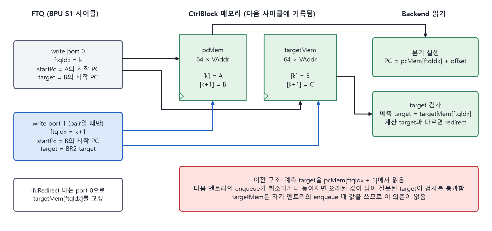

6장 · 두 기능이 만나는 곳
2-taken과 2-fetch는 따로 설계됐다. 같은 FTQ 위에서 만나면서 서로를 제약하는 지점이 세 곳 있고, 그 접점에서 찾은 버그가 둘 있다.
이 장에서 배우는 것
- pair가 guard를 키우고 2-fetch 기회를 줄이는 이유를 말할 수 있다.
- 페이지 경계 검사가 BPU와 uBTB 두 곳에 있는 이유를 말할 수 있다.
- targetMem이 왜 필요했는지 pcMem의 stale 문제로 설명할 수 있다.
6.1 pair는 guard를 키운다
pair는 한 사이클에 엔트리 2개를 넣는다. 그러므로 S3 override가 되감을 수 있는 범위도 2배가 된다. guard가 pair를 2로 세는 이유다. pair가 연속이면 guard는 5까지 커진다. pair가 없는 구간에서는 guard가 작아져 2-prefetch와 2-fetch 기회가 늘어난다.
예측이 빠른 구간에서는 fetch가 조심스러워지고, 예측이 느린 구간에서는 fetch가 과감해진다. 둘이 서로를 당기는 구조다.
6.2 페이지 경계는 두 곳에서 막는다
ICache는 페이지를 넘는 블록을 받지 않는다. 일반 블록은 BPU의 페이지 경계 절단 로직이 이를 보장한다. pair second 블록은 그 로직을 지나지 않으므로 uBTB lookup에서 직접 검사한다(4.2). FTQ에는 시뮬레이션용 검사가 있어 second 블록이 페이지를 넘으면 에러를 낸다.
6.3 pcMem이 흔들리던 자리에 targetMem을 두다

그림 6-1. pcMem과 targetMem의 write, read 경로.
pcMem. 엔트리별 시작 PC다. pair는 한 사이클에 2개를 쓰므로 write port를 하나 더 둔다.
targetMem. 엔트리별 예측 target이다. backend의 target 검사에 쓴다.
이전에는 예측 target을 다음 엔트리의 시작 PC, 곧 pcMem[ftqIdx + 1]에서 읽었다. 보통은 맞다. 그런데 다음 엔트리의 enqueue가 override로 취소되거나 FTQ full로 늦어지면 그 자리에 오래된 값이 남는다. 오래된 값이 우연히 틀린 target과 같으면 검사를 통과한다.
targetMem은 자기 엔트리의 enqueue 때 값을 쓰므로 다음 엔트리와 무관하다. predecode redirect는 엔트리를 다시 쓰지 않고 진행 방향만 바꾸므로, 이때 targetMem의 해당 엔트리를 redirect target으로 고쳐 쓴다.
6.4 접점에서 찾은 버그 둘
gcc difftest 레지스터 어긋남. 레지스터 값이 한 iteration 어긋났다. 원인은 6.3의 오래된 target이었다. targetMem 도입으로 해결했다.
FPGA gcc hang. 원인은 2-fetch의 예외 처리였다. 예외를 블록별로 구분하고, WayLookup 예외 표시가 두 엔트리를 모두 덮도록 수정해 해결했다. 5.4의 MainPipe 설명에 있는 두 문장이 이 수정이다.
두 버그의 공통점이 있다. 하나의 요청에 블록이 둘 실리면서 "이 값은 어느 블록의 것인가"가 모호해진 자리에서 생겼다.
핵심 정리
- pair는 guard를 2씩 키운다. 예측이 빨라지는 구간에서 fetch가 조심스러워진다.
- pair second는 BPU의 보호 로직을 지나지 않으므로 uBTB가 직접 페이지 경계를 검사한다.
- 다음 엔트리에서 빌려 쓰던 target을 자기 엔트리에 저장하는 것으로 바꿨다. 이것이 targetMem이다.
- 접점의 버그는 "이 값은 어느 블록 것인가"가 모호해진 자리에서 생겼다.
확인 퀴즈
- pcMem[ftqIdx + 1]이 틀린 값을 가질 수 있는 두 상황은?
- predecode redirect 때 targetMem을 고쳐 쓰는 이유는? backend redirect 때는 왜 필요 없는가?
답
- 다음 엔트리의 enqueue가 S3 override로 취소된 경우와 FTQ full로 늦어진 경우다.
- predecode redirect는 엔트리를 다시 쓰지 않고 진행 방향만 바꾸므로 enqueue가 다시 일어나지 않는다. backend redirect 뒤에는 BPU가 그 자리부터 다시 예측해 enqueue가 일어나므로 그때 새 값이 쓰인다.